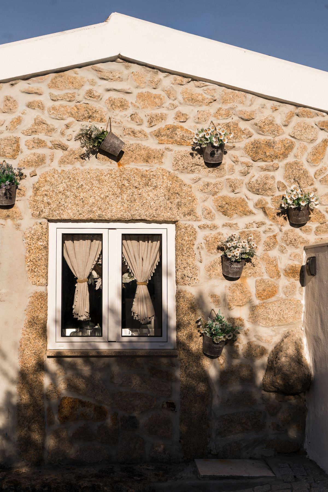

As raízes
A minha ligação à Atalaia do Campo começou muito antes de existir a Casa da Tapada.
Desde pequena que vinha à aldeia visitar os meus avós. Foi aqui que cresci entre histórias de família, natureza e a liberdade própria de quem tem raízes num lugar. Mesmo vivendo em Lisboa, a Atalaia esteve sempre presente na minha vida e foi sempre um lugar de regresso, de pertença e de memórias.
O antigo palheiro
Quando fui crescendo, os meus pais decidiram comprar uma quinta numa zona mais rural da aldeia, que outrora teria pertencido aos bisavós do meu pai. A família ia aumentando e a casa dos meus avós começou a tornar-se pequena para receber todos. Ao mesmo tempo, começámos a preferir o silêncio do campo ao movimento e ao barulho do centro da aldeia.
Na quinta já existia um antigo palheiro, que os meus pais foram adaptando, aos poucos, às necessidades da nossa família. Não tinha grandes luxos nem todas as comodidades, mas tinha aquilo de que precisávamos para sair da rotina, estarmos juntos e aproveitarmos a tranquilidade do campo.
Os meus filhos ainda viveram muitos momentos ali, numa altura em que as condições eram bastante simples. Para nós, isso nunca foi um problema. Pelo contrário, era precisamente essa simplicidade que nos permitia desligar, abrandar e aproveitar verdadeiramente os dias na aldeia. E sabia tão bem.
Mais tarde, os meus filhos foram crescendo e os meus pais decidiram construir, na mesma quinta, uma casa maior — aquela onde hoje continuamos a ficar sempre que os visitamos, o que acontece com bastante regularidade, quase todos os fins de semana.
Com a mudança para a casa nova, o antigo palheiro perdeu a função que tinha tido durante tantos anos e passou a servir sobretudo como arrecadação, onde os meus pais guardavam alguns dos produtos que recolhiam da terra.

Uma nova vida
Com o passar do tempo, já na faculdade, a minha filha começou a levar consigo alguns amigos, rapazes e raparigas que se apaixonaram pela nossa aldeia desde o primeiro momento. Todos os anos regressavam para as festas e encontravam ali um lugar onde podiam estar juntos, longe da rotina e da agitação da cidade.
Foi então que se tornou necessário dar uma nova vida àquela casa. Os meus pais fizeram-lhe uma pequena renovação e mobilaram-na com peças que tinham de outras casas. Sem grandes luxos ou preocupações estéticas, voltou a cumprir aquilo que sempre soube fazer tão bem: acolher pessoas, criar momentos felizes e guardar novas memórias.
Em meados de 2025, alguém me sugeriu que transformasse aquela casa num alojamento local. Confesso que, numa primeira fase, não fiquei muito recetiva à ideia. Como nunca tinha sentido necessidade de procurar este tipo de refúgio, custava-me acreditar que outras pessoas pudessem procurar precisamente aquilo que, para mim, sempre tinha sido tão natural.
Ainda assim, fui conversando com a família e, aos poucos, decidimos arriscar. Os meus pais confiaram em mim e deram-me a casa, permitindo-me dar-lhe um novo rumo e fazer dela aquilo que imaginasse.
O meu marido e os meus filhos apoiaram-me desde o início, embora com algumas reservas e dúvidas sobre se o projeto iria realmente resultar. Talvez por isso, esta transformação tenha começado mais como uma experiência do que como uma certeza.
A zona exterior
Então começaram as obras. Quis aperfeiçoar a casa ao meu gosto, desde a pintura à decoração, cuidando de cada detalhe para que o espaço fosse acolhedor, bonito e tivesse verdadeiramente a nossa identidade. No final desse ano, a casa estava pronta.
Ainda assim, para mim faltava qualquer coisa. A nossa região tem um clima tão agradável durante grande parte do ano que me parecia importante criar um espaço onde os hóspedes pudessem aproveitar também o exterior. Foi aí que surgiu a ideia da zona de lazer.
Confesso que, nessa altura, a proposta não foi recebida com grande entusiasmo. A família receava que investíssemos demasiado num projeto que, caso não tivesse procura, pudesse acabar por ficar abandonado. Afinal, nós já tínhamos todas essas comodidades na quinta.
Mas eu sentia que era diferente. Não queria apenas adaptar aquilo que já existia para nosso uso. Queria criar algo exclusivo para quem escolhesse ficar na Casa da Tapada — um espaço pensado para descansar, aproveitar os dias quentes, estar em família e viver a tranquilidade da quinta com privacidade.
Deixámos passar os meses de janeiro e fevereiro e, em março, o meu marido decidiu acreditar comigo nesta ideia. Avançámos então com a criação da zona exterior e, em meados de abril, tudo estava finalmente concluído.

Hoje
Foi aí que começou verdadeiramente esta aventura. Lançámos a página da Casa da Tapada no Instagram, já com todo o espaço pronto, e o que se seguiu foi um verdadeiro turbilhão de emoções. As pessoas começaram a seguir a página, a gostar do projeto, a pedir informações e a fazer reservas. A resposta superou todas as nossas expectativas.
Até os mais reticentes acabaram por reconhecer que a persistência tinha valido a pena. Recebi muitos elogios pelo bom gosto, pela dedicação e por ter acreditado na ideia mesmo quando ainda existiam tantas dúvidas.
Hoje, já não sou apenas eu a sonhar com este projeto. Somos uma equipa, uma família inteira a trabalhar para receber da melhor forma possível todas as pessoas que escolhem a Casa da Tapada.
E é profundamente gratificante sentir o carinho de quem nos visita, receber mensagens bonitas, saber que gostaram da estadia e perceber que este espaço, que durante tantos anos guardou as nossas memórias, passou também a fazer parte das memórias de outras famílias.
Esperamos por si na Casa da Tapada.
Carla e família